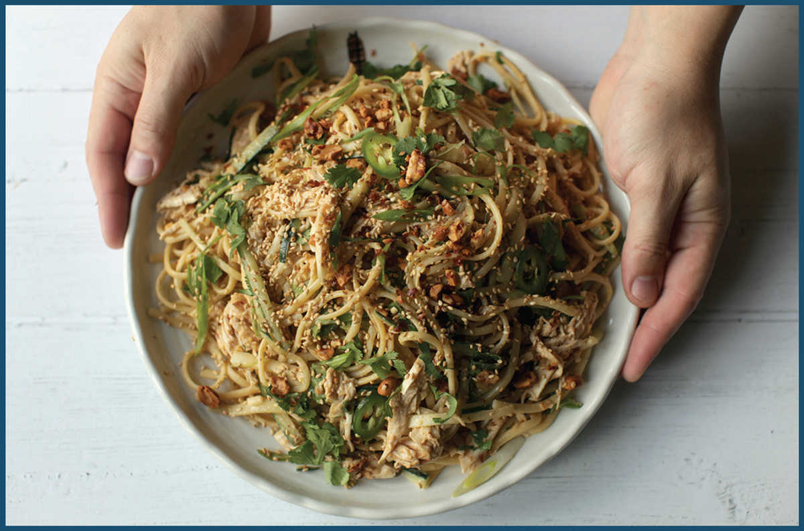

FOOD TRUCK CHICKEN AND SESAME NOODLE SALAD

I was working in a biology lab in Kendall Square, Cambridge, during the summer of 1999, earning $8 an hour but lunching like a king from Goosebeary’s, a popular food truck that, for a few bucks, handed over a heavy Styrofoam clamshell container full of inexpensive pan-Asian food to hungry biotech workers and students for over two decades. A good 75 percent of my calorie intake came in the form of Goosebeary’s Sesame Chicken Salad that summer.
It closed in the early 2010s, right around the time that food trucks became gourmet food trucks and disposable Styrofoam trays were no longer in fashion, but I’m still reminded of that summer every time I make sesame noodle salads at home.
The noodles are clearly a riff on similar sesame noodle dishes from China, perhaps Sichuan-style liang miàn, or a cold adaptation of Shanghai-style ma jiang miàn (here), but the Chinese American version is a uniquely delicious dish unto itself. According to Chinese American chef Martin Yan and Sam Sifton at the New York Times, cold sesame noodle salad was invented at Hwa Yuan restaurant in New York’s Chinatown during the 1970s by Sichuanese restaurateur Shorty Tang (a new incarnation of the restaurant opened in 2017). In his version, cold noodles are dressed with a simple concoction of peanut butter and Chinese sesame paste seasoned with soy sauce, vinegar, garlic, ginger, chile sauce, and sugar, then tossed with slivered cucumbers and topped with roasted crushed peanuts.